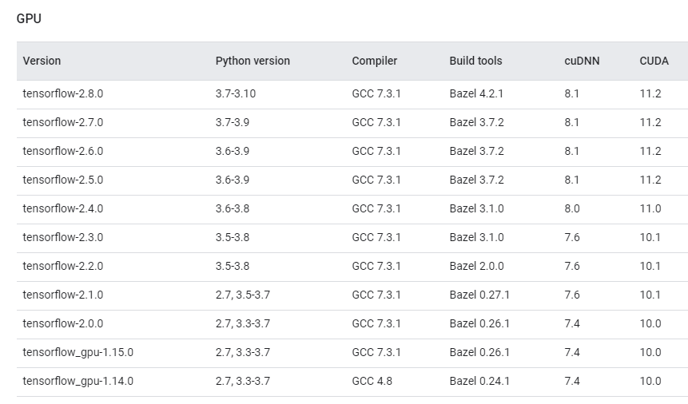
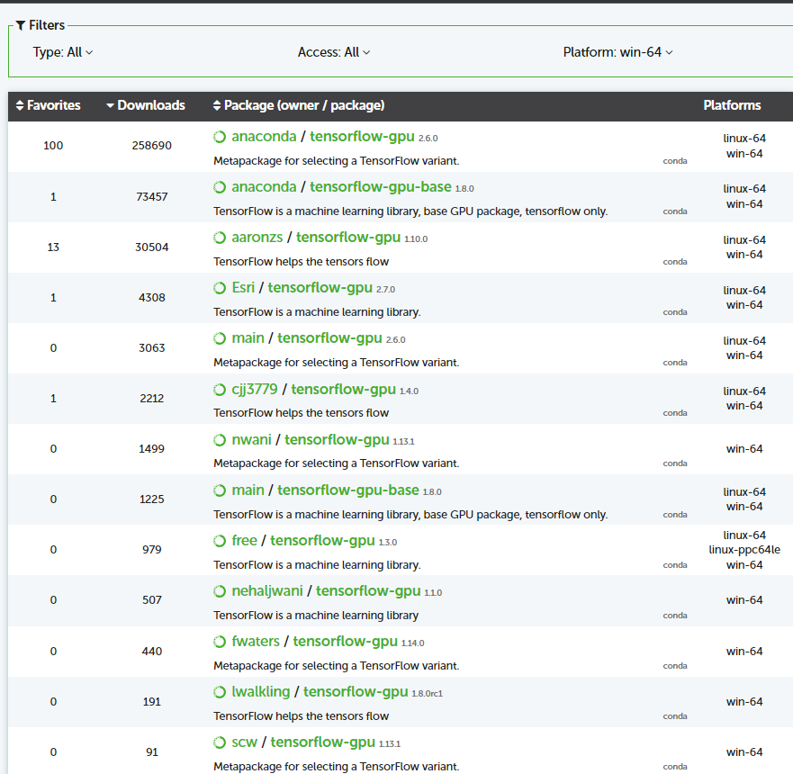
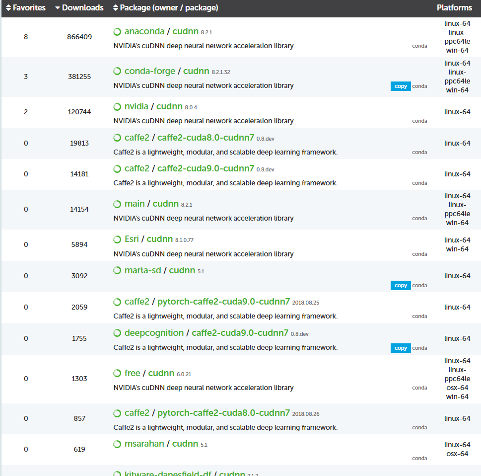

How to install tensorflow-gpu
Tensorflow is one of the most popular AI frameworks and by utilizing a CUDA enabled GPU we can make it a lot faster. There are many ways to install tensorflow-gpu, but instructions found on the internet can be confusing and overwhelming to a newcomer. So here I try to present the most straightforward way of Installing tensorflow-gpu on your local machine. NB: Instructions provided are applicable for both Linux and Windows. However, for Linux, using docker is the easiest method. Here are the instructions of how to install tensorflow-gpu on docker.
Requirements:
- A CUDA enabled GPU: You need a CUDA enabled Nvidia Graphics Card. Check the specifications to see if your GPU has CUDA cores or not.
- Nvidia Graphics Driver: If you are on a windows machine then I recommend installing Geforce Experience, it will automatically update your graphics drivers.
- Anaconda: Anaconda is one of the most popular data science platforms. It has many libraries preinstalled for you. Also, it lets you create different environments with different versions of python and libraries. You can download anaconda from here.
Instructions:
- Go to https://www.tensorflow.org/install/source#gpu. Here we can see a list of tensorflow versions with their requirements. 
- Now check the availability of tensorflow gpu and cudnn. Go to www.anaconda.org and search for the package tensorflow-gpu. You will see a list of packages. Filter your OS platform. will now see a shortened list.  Then search for cudnn. Filter like before. From these three lists, find an appropriate combination. For example, tensorflow-gpu version 2.6.0 with cudnn 8.1 works perfectly. You can also access older versions by going inside these packages.  N.B: You can ask why we are only matching tensorflow version with only cudnn and not CUDA. This is because required version of CUDA is included in the cudnn package that we will see later. So, we don’t have to worry about CUDA version.
- Now open anaconda prompt and create a new environment. Some basic conda codes can be found here. Choose any name for the environment. Choose python version according to the build requirements above.
- Install your desired version of cudnn. Be careful of the versions that are being installed
- Check if your GPU is recognized by typing the following code in your python prompt, Jupiter notebook or any other IDE of your choice.